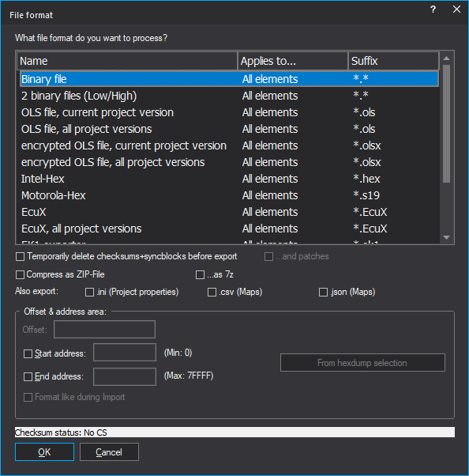

|
The dialog Export file |

  
|
|
The dialog Export file |
|

The dialog will be displayed in different situations: When importing a version you can configure the data source you want to use. When exporting a version you can configure the kind of data file you want to create.
Area "File format":
First you can choose the file format you want to process. Binary files contain the pure eprom data without any control information. WinOLS may also read from two files (one byte from each file alternating). Furthermore you may read OLS files and read or write WinOLS files. You can recognise OLS files at the file suffix ‘.dat‘ and WinOLS files at the file suffix ‘.ols‘. If you export ols-files you can also create older versions. (The WinOLS file format has been changed several times due to the numerous improvements, which have been made. If you want to create a WinOLS file that can be read by an older version, you can configure it here.)
Furthermore you may read and write Intel-Hex files. These files often carry the files suffix ‘.hex‘ sometimes also ‘.paf‘ or ‘.daf‘. And your may read and write Motorola-Hex files. These files often carry the suffix ‘.s19‘.
The list of supported file formats can be extended by plugins.
Area "Code data & swap lines":
Furthermore it is possible to encrypt data and lines just like it would be done with the integrated eprommer. In oder to activate this option you must enable encryption in the producer dialog and select a key file.
Optionally swapping of data lines can be activated, which is done just like it would be done when you are using the integrated eprommer. In order to activate this option you must select a producer and activate the swapping of data lines.
Area "Offset & address area":
Here an offset can be configured for Intel-Hex / Motorola-Hex files for the addresses in these files. Furthermore an address range can be configured if you want to handle only a part of the project. When importing this option is only available if the project already contains a version. It is always available when exporting.
For Intel-Hex / Motorola-Hex files you can tell WinOLS to mimic the file format of the imported file. This is only available when the file was imported from the same file format. It helps you communicate with other programs that require the file to have a certain format (within the standard).
Area at the bottom of the dialog:
When exporting you may ‘zip‘ the results. This will create a compressed (=smaller) files, which is great for sending it by e-mail. In order to unpack it you’ll need programs like WinZip (www.winzip.com).
When importing into a project which already has a version you may decide not to create a new version but to overwrite the current one. This is especially useful when you want to combine multiple Intel or Motorola files.
Notes about file formats:
BdmToGo-files can only be exported if the project is marked as BDM project in the dialog "project properties". BslToGo-files work respectively.
Notes about exporting elements:
If the file format doesn’t support elements, only the data from the currently active element will be exported. If you want to export all elements, select <All elements> before exporting. If the file format supports elements (only OLS and BdmToGo files do this), all elements will be exported, regardless of the element that is currently active.
See also:
Shortcuts
| Symbol bar: | - |
| Keyboard: | - |